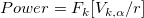
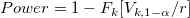
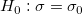
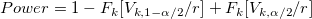
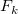
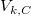
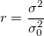

片側パワー

片側パワー

両側パワー



：K= N-1の、自由度kのカイ二乗分布の分布関数
：自由度kのカイ二乗分布のためのCにおけるに逆CDFを評価 ：有意水準
：有意水準

Originは、パワー等価で反復アルゴリズムを使用しています。各反復において、トライアルサンプルサイズのためのパワーが評価され、評価されたパワーが整数サンプルサイズに対応する値、および、目標値よりも大きい、最も近い到達したときに反復は停止されます。